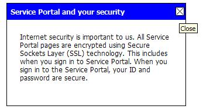

This package contains plain Java classes for online help in Shared Portal Framework portlet applications.
The {@link com.hp.it.spf.xa.help.portlet.ClassicContextualHelpProvider} class represents an instance of portlet contextual help, in its "classic" rendition.
As with all kinds of contextual help, this class lets you set some content for the contextual help hyperlink (text, an image, etc), as well as some brief content for the contextual help itself (more text and images, etc). And it provides a {@link com.hp.it.spf.xa.help.portlet.ClassicContextualHelpProvider#getHTML(boolean)} method for generating a string of HTML ready to be output which expresses that.
As "classic" contextual help in particular, this class also lets you set some content for the contextual help title (eg some very brief text), as well as numerous options for styling the look-and-feel of the contextual help popup. The string emitted by the {@link com.hp.it.spf.xa.help.portlet.ClassicContextualHelpProvider#getHTML(boolean)} is a long string of DHTML which produces a dragable popup table containing the help title and content, when the link is clicked, and which can be dismissed by clicking on an "X" image contained in the popup.
For example, consider the following text message to be displayed in your UI:

In this message, the part generated by {@link
com.hp.it.spf.xa.help.portlet.ClassicContextualHelpProvider#getHTML(boolean)}
is the link labeled secure. And when the link is clicked,
the DHTML in that link produces a popup table looking like this:

The table is draggable and can be closed by clicking on the "X"
image. You may configure some ALT text for the "X" image in
your message properties, using the contextualHelp.close.alt
message key. For example, if you have the following message in your
resource bundles:
contextualHelp.close.alt=Close
Then when the user mouses-over the "X" image in the contextual help popup, it looks like this:
Note: The style of the table shown above is the default style (which results when none of the style or width setters are specified in the class to override it). Use the class setters (like {@link com.hp.it.spf.xa.help.portlet.ClassicContextualHelpProvider#setWidth(int)}) to apply a different size or style.
Note: The class assumes that your portlet application
includes the "X" image in a GIF file named btn_close.gif,
in the images/ subfolder of either your external portlet
resource bundle folder, or your portlet WAR.
Note: The returned HTML from this class can include
no-script markup for the unscripted case (ie JavaScript disabled in the
browser). Use the class setter {@link
com.hp.it.spf.xa.help.portlet.ClassicContextualHelpProvider#setNoScriptHref(java.lang.String)}
to specify a no-script HREF - this can be an entire URL, or just a
document fragment name (beginning with #). If your portlet
supports help mode, that is where the no-script markup will
point by default (and if you set a document fragment name as the
no-script HREF, that will be passed as a render parameter in that
no-script URL).
Please see the class documentation for more information.